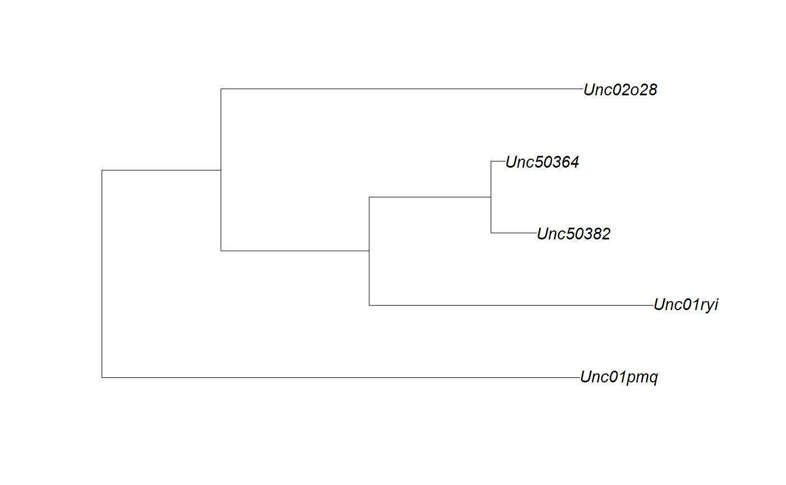

R/read.biom.r
read.biom.RdExtracts counts, metadata, taxonomy, and phylogeny from a biom file.
read.biom(src, tree = "auto", prune = cleanup, cleanup = FALSE)
| src | Input data as either a file path, URL, or JSON string.
|
|---|---|
| tree | The default value of |
| prune | Should samples and taxa with zero observations be discarded?
(Default: |
| cleanup | Renames ambiguous taxons and removes leading underscores. Also converts character metadata into factors and dates based on heuristics. (Default: FALSE) |
A BIOM class object containing the parsed data. This object
can be treated as a list with the following named elements:
A numeric slam sparse matrix of observation
counts. Taxa (OTUs) as rows and samples as columns.
A data frame containing any embedded metadata. Row names are sample IDs.
Character matrix of taxonomic names, if given. Row names are taxa (OTU) IDs. Column rows are named Kingdom, Phylum, Class, Order, Family, Genus, Species, and Strain, or TaxLvl.1, TaxLvl.2, ... , TaxLvl.N when more than 8 levels of taxonomy are encoded in the biom file.
An object of class phylo defining the
phylogenetic relationships between the taxa. Although the
official specification for BIOM only includes phylogenetic trees
in BIOM version 2.1, if a BIOM version 1.0 file includes a
phylogeny entry with newick data, then it will be loaded
here as well. The ape package has additional functions
for working with phylo objects.
A named character vector, where the names are taxonomic identifiers and the values are the sequences they represent. These values are not part of the official BIOM specification, but will be read and written when defined.
A list of other attributes defined in the BIOM file,
such as id, type, format, format_url,
generated_by, date, matrix_type,
matrix_element_type, Comment, and shape
metadata, taxonomy, and phylogeny are optional
components of the BIOM file specification and therefore will be empty
in the returned object when they are not provided by the BIOM file.
library(rbiom) infile <- system.file("extdata", "hmp50.bz2", package = "rbiom") biom <- read.biom(infile) summary(biom)#> Length Class Mode #> counts 6 simple_triplet_matrix list #> metadata 6 data.frame list #> taxonomy 2940 -none- character #> phylogeny 4 phylo list #> sequences 490 -none- character #> info 10 -none- list#> HMP01 HMP02 HMP03 HMP04 #> UncO2713 0 0 0 0 #> UncO4101 1 5 6 18 #> AnmMass2 0 0 0 0 #> PreBivi6 0 0 0 0top5 <- names(head(rev(sort(slam::row_sums(biom$counts))), 5)) biom$taxonomy[top5,c('Family', 'Genus')]#> Family Genus #> Unc01yki "Lactobacillaceae" "Lactobacillus" #> Unc53100 "Streptococcaceae" "Streptococcus" #> LtbAci52 "Lactobacillaceae" "Lactobacillus" #> CnbTube3 "Corynebacteriaceae" "Corynebacterium 1" #> Unc02qsf "Staphylococcaceae" "Staphylococcus"#> HMP01 HMP02 HMP03 HMP04 HMP05 HMP06 #> Unc01yki 0 0 0 0 0 0 #> Unc53100 1083 543 301 223 2672 748 #> LtbAci52 0 0 0 0 0 0 #> CnbTube3 0 0 0 0 0 0 #> Unc02qsf 0 0 0 0 0 0#> #> Anterior nares Buccal mucosa Mid vagina Saliva Stool #> Female 5 5 10 5 5 #> Male 5 5 0 5 5#> [1] "Mean age: 27.8"# Phylogenetic tree tree <- biom$phylogeny top5.tree <- rbiom::subtree(tree, top5) ape::plot.phylo(top5.tree)